install.packages("quanteda")3 Quantitative analysis of textual data
- https://tutorials.quanteda.io/introduction/
3.1 Introduction
There are several R packages used for quantitative text analysis, but we will focus specifically on the quanteda package. So, first install the package from CRAN:
Since the release of quanteda version 3.0, textstat_*, textmodel_* and textplot_* functions are available in separate packages. We will use several of these functions in the chapters below and strongly recommend installing these packages.
install.packages("quanteda.textmodels")
install.packages("quanteda.textstats")
install.packages("quanteda.textplots")We will use the readtext package to read in different types of text data in these tutorials.
install.packages("readtext")3.2 Quantitative data
Before beginning we need to load the libraries
And these ones lates for the modelling section:
3.2.1 Pre-formatted files
If your text data is stored in a pre-formatted file where one column contains the text and additional columns might store document-level variables (e.g. year, author, or language), you can import this into R using read_csv().
path_data <- system.file("extdata/", package = "readtext")
dat_inaug <- read_csv(paste0(path_data, "/csv/inaugCorpus.csv"))Rows: 5 Columns: 4
── Column specification ────────────────────────────────────────────────────────
Delimiter: ","
chr (3): texts, President, FirstName
dbl (1): Year
ℹ Use `spec()` to retrieve the full column specification for this data.
ℹ Specify the column types or set `show_col_types = FALSE` to quiet this message.glimpse(dat_inaug)Rows: 5
Columns: 4
$ texts <chr> "Fellow-Citizens of the Senate and of the House of Represent…
$ Year <dbl> 1789, 1793, 1797, 1801, 1805
$ President <chr> "Washington", "Washington", "Adams", "Jefferson", "Jefferson"
$ FirstName <chr> "George", "George", "John", "Thomas", "Thomas"The data set is about the inaugural speeches of the US presidents. So as we can see the data set is arranged in tabular form, with 5 rows and 4 columns. The columns are texts, Year, President, and FirstName.
Alternatively, you can use the readtext package to import character (comma- or tab-separated) values. readtext reads files containing text, along with any associated document-level variables. As an example, consider the following tsv file:
tsv_file <- paste0(path_data, "/tsv/dailsample.tsv")
cat(readLines(tsv_file, n = 4), sep = "\n") # first 3 linesspeechID memberID partyID constID title date member_name party_name const_name speech
1 977 22 158 1. CEANN COMHAIRLE I gCOIR AN LAE. 1919-01-21 Count George Noble, Count Plunkett Sinn Féin Roscommon North Molaimse don Dáil Cathal Brugha, an Teachta ó Dhéisibh Phortláirge do bheith mar Cheann Comhairle againn indiu.
2 1603 22 103 1. CEANN COMHAIRLE I gCOIR AN LAE. 1919-01-21 Mr. Pádraic Ó Máille Sinn Féin Galway Connemara Is bród mór damhsa cur leis an dtairgsin sin. Air sin do ghaibh CATHAL BRUGHA ceannus na Dála agus adubhairt:-
3 116 22 178 1. CEANN COMHAIRLE I gCOIR AN LAE. 1919-01-21 Mr. Cathal Brugha Sinn Féin Waterford County ' A cháirde, tá obair thábhachtach le déanamh annso indiu, an obair is tábhachtaighe do rinneadh in Éirinn ón lá tháinic na Gaedhil go hÉirinn, agus is naomhtha an obair í. Daoine go bhfuil dóchas aca as Dia iseadh sinn go léir, daoine a chuireann suim I ndlighthibh Dé, agus dá bhrigh sin budh chóir dúinn congnamh d'iarraidh ar Dhia I gcóir na hoibre atá againn le déanamh. Iarrfad anois ar an sagart is dúthrachtaighe dár mhair riamh I nÉirinn, an tAthair Micheál Ó Flannagáin, guidhe chum an Spiorad Naomh dúinn chum sinn do stiúradh ar ár leas ar an mbóthar atá againn le gabháil. ' ' Agus, a cháirde, pé cineál creidimh atá ag éinne annso, iarrfad ar gach n-aon paidir do chur suas chum Dé, ó íochtar a chroidhe chum cabhair do thabhairt dúinn indiu. Glaodhaim anois ar an Athair Micheál Ó Flannagáin. ' Do tháinig an tATHAIR MICHEÁL Ó FLANNAGÁIN I láthair na Dála agus do léigh an phaidir seo I n-ár ndiaidh: 'Tair, A Spioraid Naomh, ath-líon croidhthe t'fhíoraon, agus adhain ionnta teine do ghrádha. ' ' Cuir chugainn do Spioraid agus cruthóchfar iad agus athnuadhfaidh Tú aghaidh na talmhan.' ' Guidhmís: ' ' A Dhia, do theagaisc croidhthe sa bhfíoraon le lonnradh an Spioraid Naoimh, tabhair dúinn, san Spiorad cheudna, go mblaisfimíd an ceart agus go mbéidh síorgháirdeachais orainn de bhárr a shóláis sin. Tré Íosa Críost ár dTighearna. Ámén'The document itself in raw format is arranged in tabular form, separated by tabs. Each row contains a “document” (in this case, a speech) and the columns contain document-level variables. The column that contains the actual speech is named speech. To import this using readtext, you can use the following code:
Rows: 33
Columns: 11
$ doc_id <chr> "dailsample.tsv.1", "dailsample.tsv.2", "dailsample.tsv.3"…
$ text <chr> "Molaimse don Dáil Cathal Brugha, an Teachta ó Dhéisibh Ph…
$ speechID <int> 1, 2, 3, 4, 5, 6, 7, 8, 9, 10, 11, 12, 13, 14, 15, 16, 17,…
$ memberID <int> 977, 1603, 116, 116, 116, 116, 496, 116, 116, 2095, 116, 1…
$ partyID <int> 22, 22, 22, 22, 22, 22, 22, 22, 22, 22, 22, 22, 22, 22, 22…
$ constID <int> 158, 103, 178, 178, 178, 178, 46, 178, 178, 139, 178, 178,…
$ title <chr> "1. CEANN COMHAIRLE I gCOIR AN LAE.", "1. CEANN COMHAIRLE …
$ date <chr> "1919-01-21", "1919-01-21", "1919-01-21", "1919-01-21", "1…
$ member_name <chr> "Count George Noble, Count Plunkett", "Mr. Pádraic Ó Máill…
$ party_name <chr> "Sinn Féin", "Sinn Féin", "Sinn Féin", "Sinn Féin", "Sinn …
$ const_name <chr> "Roscommon North", "Galway Connemara", "Waterford County",…3.2.2 Multiple text files
A second option to import data is to load multiple text files at once that are stored in the same folder or subfolders. Again, path_data is the location of sample files on your computer. Unlike the pre-formatted files, individual text files usually do not contain document-level variables. However, you can create document-level variables using the readtext package.
The directory /txt/UDHR contains text files (“.txt”) of the Universal Declaration of Human Rights in 13 languages.
path_udhr <- paste0(path_data, "/txt/UDHR")
list.files(path_udhr) # list the files in this folder [1] "UDHR_chinese.txt" "UDHR_czech.txt" "UDHR_danish.txt"
[4] "UDHR_english.txt" "UDHR_french.txt" "UDHR_georgian.txt"
[7] "UDHR_greek.txt" "UDHR_hungarian.txt" "UDHR_icelandic.txt"
[10] "UDHR_irish.txt" "UDHR_japanese.txt" "UDHR_russian.txt"
[13] "UDHR_vietnamese.txt"Each one of these txt files contains the text of the UDHR in the specific language. For instance, to inspect what each one of these files contain, we do the following:
世界人权宣言
联合国大会一九四八年十二月十日第217A(III)号决议通过并颁布 1948 年 12 月 10 日， 联 合 国 大 会 通 过 并 颁 布《 世 界 人 权 宣 言》。 这 一 具 有 历 史 意 义 的《 宣 言》 颁 布 后， 大 会 要 求 所 有 会 员 国 广 为 宣 传， 并 且“ 不 分 国 家 或 领 土 的 政 治 地 位 , 主 要 在 各 级 学 校 和 其 他 教 育 机 构 加 以 传 播、 展 示、 阅 读 和 阐 述。” 《 宣 言 》 全 文 如 下： 序言 鉴于对人类家庭所有成员的固有尊严及其平等的和不移的权利的 承 认, 乃 是 世 界 自 由、 正 义 与 和 平 的 基 础, 鉴 于 对 人 权 的 无 视 和 侮 蔑 已 发 展 为 野 蛮 暴 行, 这 些 暴 行 玷 污 了 人 类 的 良 心, 而 一 个 人 人 享 有 言 论 和 信 仰 自 由 并 免 予 恐 惧 和 匮 乏 的 世 界 的 来 临, 已 被 宣 布 为 普 通 人 民 的 最 高 愿 望, 鉴 于 为 使 人 类 不 致 迫 不 得 已 铤 而 走 险 对 暴 政 和 压 迫 进 行 反 叛, 有 必 要 使 人 权 受 法 治 的 保 护, 鉴 于 有 必 要 促 进 各 国 间 友 好 关 系 的 发 展, 鉴于各联合国国家的人民已在联合国宪章中重申他们对基本人 权、 人 格 尊 严 和 价 值 以 及 男 女 平 等 权 利 的 信 念, 并 决 心 促 成 较 大 自 由 中 的 社 会 进 步 和 生 活 水 平 的 改 善, 鉴于各会员国业已誓愿同联合国合作以促进对人权和基本自由的 普 遍 尊 重 和 遵 行, 鉴于对这些权利和自由的普遍了解对于这个誓愿的充分实现具有 很 大 的 重 要 性, 因 此 现 在, 大 会, 发 布 这 一 世 界 人 权 宣 言 , 作 为 所 有 人 民 和 所 有 国 家 努 力 实 现 的 共 同 标 准, 以 期 每 一 个 人 和 社 会 机 构 经 常 铭 念 本 宣 言, 努 力 通 过 教 诲 和 教 育 促 进 对 权 利 和 自 由 的 尊 重, 并 通 过 国 家 的 和 国 际 的 渐 进 措 施, 使 这 些 权 利 和 自 由 在 各 会 员 国 本 身 人 民 及 在 其 管 辖 下 领 土 的 人 民 中 得 到 普 遍 和 有 效 的 承 认 和 遵 行; 第一条
人 人 生 而 自 由, 在 尊 严 和 权 利 上 一 律 平 等。 他 们 赋 有 理 性 和 良 心, 并 应 以 兄 弟 关 系 的 精 神 相 对 待。 第二条 人 人 有 资 格 享 有 本 宣 言 所 载 的 一 切 权 利 和 自 由, 不 分 种 族、 肤 色、 性 别、 语 言、 宗 教、 政 治 或 其 他 见 解、 国 籍 或 社 会 出 身、 财 产、 出 生 或 其 他 身 分 等 任 何 区 别。 并 且 不 得 因 一 人 所 属 的 国 家 或 领 土 的 政 治 的、 行 政 的 或 者 国 际 的 地 位 之 不 同 而 有 所 区 别, 无 论 该 领 土 是 独 立 领 土、 托 管 领 土、 非 自 治 领 土 或 者 处 于 其 他 任 何 主 权 受 限 制 的 情 况 之 下。 第三条 人 人 有 权 享 有 生 命、 自 由 和 人 身 安 全。 第四条 任 何 人 不 得 使 为 奴 隶 或 奴 役; 一 切 形 式 的 奴 隶 制 度 和 奴 隶 买 卖, 均 应 予 以 禁 止。 第五条 任 何 人 不 得 加 以 酷 刑, 或 施 以 残 忍 的、 不 人 道 的 或 侮 辱 性 的 待 遇 或 刑 罚。 第六条 人 人 在 任 何 地 方 有 权 被 承 认 在 法 律 前 的 人 格。 第七条To import these files, you can use the following code:
Rows: 13
Columns: 2
$ doc_id <chr> "UDHR_chinese.txt", "UDHR_czech.txt", "UDHR_danish.txt", "UDHR_…
$ text <chr> "世界人权宣言\n联合国大会一九四八年十二月十日第217A(III)号决议…
Note
If you are using Windows, you need might need to specify the encoding of the file by adding encoding = "utf-8". In this case, imported texts might appear like <U+4E16><U+754C><U+4EBA><U+6743> but they indicate that Unicode charactes are imported correctly.
Here’s another example of multiple text files. The directory /txt/EU_manifestos contains text files (“.txt”) of the European Union manifestos in different languages.
path_eu <- paste0(path_data, "/txt/EU_manifestos/")
list.files(path_eu) # list the files in this folder [1] "EU_euro_2004_de_PSE.txt" "EU_euro_2004_de_V.txt"
[3] "EU_euro_2004_en_PSE.txt" "EU_euro_2004_en_V.txt"
[5] "EU_euro_2004_es_PSE.txt" "EU_euro_2004_es_V.txt"
[7] "EU_euro_2004_fi_V.txt" "EU_euro_2004_fr_PSE.txt"
[9] "EU_euro_2004_fr_V.txt" "EU_euro_2004_gr_V.txt"
[11] "EU_euro_2004_hu_V.txt" "EU_euro_2004_it_PSE.txt"
[13] "EU_euro_2004_lv_V.txt" "EU_euro_2004_nl_V.txt"
[15] "EU_euro_2004_pl_V.txt" "EU_euro_2004_se_V.txt"
[17] "EU_euro_2004_si_V.txt" You can generate document-level variables based on the file names using the docvarnames and docvarsfrom argument. dvsep = "_" specifies the value separator in the filenames. encoding = "ISO-8859-1" determines character encodings of the texts. Notice how the document variables are nicely generated from the file names.
dat_eu <- readtext(
file = path_eu,
docvarsfrom = "filenames",
docvarnames = c("unit", "context", "year", "language", "party"),
dvsep = "_",
encoding = "ISO-8859-1"
)
glimpse(dat_eu)Rows: 17
Columns: 7
$ doc_id <chr> "EU_euro_2004_de_PSE.txt", "EU_euro_2004_de_V.txt", "EU_euro_…
$ text <chr> "PES · PSE · SPE European Parliament rue Wiertz B 1047 Brusse…
$ unit <chr> "EU", "EU", "EU", "EU", "EU", "EU", "EU", "EU", "EU", "EU", "…
$ context <chr> "euro", "euro", "euro", "euro", "euro", "euro", "euro", "euro…
$ year <int> 2004, 2004, 2004, 2004, 2004, 2004, 2004, 2004, 2004, 2004, 2…
$ language <chr> "de", "de", "en", "en", "es", "es", "fi", "fr", "fr", "gr", "…
$ party <chr> "PSE", "V", "PSE", "V", "PSE", "V", "V", "PSE", "V", "V", "V"…3.2.3 JSON
You can also read JSON files (.json) downloaded from the Twititer stream API. twitter.json is located in data directory of this tutorial package.
The JSON file looks something like this
{"created_at":"Wed Jun 07 23:30:01 +0000 2017","id":872596537142116352,"id_str":"872596537142116352","text":"@EFC_Jayy UKIP","display_text_range":[10,14],
"source":"\u003ca href=\"http:\/\/twitter.com\/download\/iphone\" rel=\"nofollow\"\u003eTwitter for iPhone\u003c\/a\u003e","truncated":false,"in_reply_to_status_id":872596176834572288,
"in_reply_to_status_id_str":"872596176834572288","in_reply_to_user_id":4556760676,"in_reply_to_user_id_str":"4556760676","in_reply_to_screen_name":"EFC_Jayy","user":{"id":863929468984995840,"id_str":"863929468984995840","name":"\u30b8\u30e7\u30fc\u30b8","screen_name":"CoysJoji","location":"Japan","url":null,"description":null,"protected":false,
"verified":false,"followers_count":367,"friends_count":304,"listed_count":1,"favourites_count":1260,"statuses_count":2930,"created_at":"Mon May 15 01:30:11 +0000 2017","utc_offset":null,"time_zone":null,"geo_enabled":false,"lang":"en","contributors_enabled":false,"is_translator":false,"profile_background_color":"F5F8FA","profile_background_image_url":"","profile_background_image_url_https":"","profile_background_tile":false,
"profile_link_color":"1DA1F2","profile_sidebar_border_color":"C0DEED","profile_sidebar_fill_color":"DDEEF6","profile_text_color":"333333","profile_use_background_image":true,"profile_image_url":"http:\/\/pbs.twimg.com\/profile_images\/870447188400365568\/RiR1hbCe_normal.jpg",
"profile_image_url_https":"https:\/\/pbs.twimg.com\/profile_images\/870447188400365568\/RiR1hbCe_normal.jpg","profile_banner_url":"https:\/\/pbs.twimg.com\/profile_banners\/863929468984995840\/1494897624","default_profile":true,"default_profile_image":false,"following":null,"follow_request_sent":null,"notifications":null},"geo":null,"coordinates":null,
"place":null,"contributors":null,"is_quote_status":false,"retweet_count":0,"favorite_count":0,"entities":{"hashtags":[],"urls":[],"user_mentions":[{"screen_name":"EFC_Jayy","name":"\u274c\u274c\u274c","id":4556760676,"id_str":"4556760676","indices":[0,9]}],"symbols":[]},"favorited":false,"retweeted":false,"filter_level":"low","lang":"en","timestamp_ms":"1496878201171"}It’s a little hard to parse, but luckily we just leave it to the readtext package to do the job for us.
dat_twitter <- readtext("../data/twitter.json", source = "twitter")The file comes with several metadata for each tweet, such as the number of retweets and likes, the username, time and time zone.
## [1] "doc_id" "text" "retweet_count" "favorite_count"
## [5] "favorited" "truncated"3.2.4 PDF
readtext() can also convert and read PDF (“.pdf”) files. The directory /pdf/UDHR contains PDF files of the Universal Declaration of Human Rights in 13 languages. Each file looks like this:
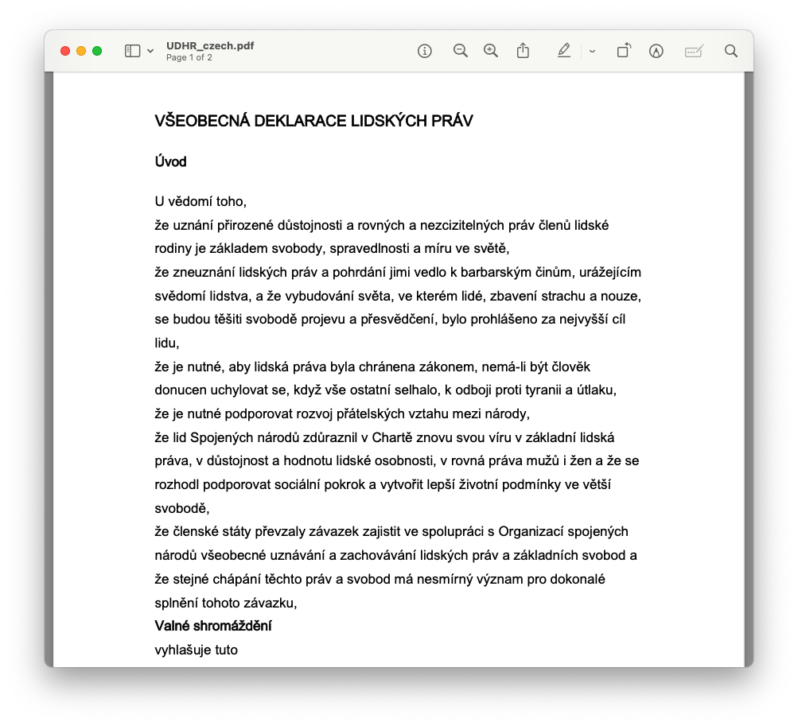
dat_udhr <- readtext(
paste0(path_data, "/pdf/UDHR/*.pdf"),
docvarsfrom = "filenames",
docvarnames = c("document", "language"),
sep = "_"
)
print(dat_udhr)readtext object consisting of 11 documents and 2 docvars.
# A data frame: 11 × 4
doc_id text document language
<chr> <chr> <chr> <chr>
1 UDHR_chinese.pdf "\"世界人权宣言\n\n联合\"..." UDHR chinese
2 UDHR_czech.pdf "\"VŠEOBECNÁ \"..." UDHR czech
3 UDHR_danish.pdf "\"Den 10. de\"..." UDHR danish
4 UDHR_english.pdf "\"Universal \"..." UDHR english
5 UDHR_french.pdf "\"Déclaratio\"..." UDHR french
6 UDHR_greek.pdf "\"ΟΙΚΟΥΜΕΝΙΚ\"..." UDHR greek
# ℹ 5 more rows3.2.5 Microsoft Word
Finally, readtext() can import Microsoft Word (“.doc” and “.docx”) files.
readtext object consisting of 11 documents and 2 docvars.
# A data frame: 11 × 4
doc_id text document language
<chr> <chr> <chr> <chr>
1 UDHR_chinese.pdf "\"世界人权宣言\n\n联合\"..." UDHR chinese
2 UDHR_czech.pdf "\"VŠEOBECNÁ \"..." UDHR czech
3 UDHR_danish.pdf "\"Den 10. de\"..." UDHR danish
4 UDHR_english.pdf "\"Universal \"..." UDHR english
5 UDHR_french.pdf "\"Déclaratio\"..." UDHR french
6 UDHR_greek.pdf "\"ΟΙΚΟΥΜΕΝΙΚ\"..." UDHR greek
# ℹ 5 more rows3.3 Workflow
quanteda has three basic types of objects:
-
Corpus
- Saves character strings and variables in a data frame
- Combines texts with document-level variables
-
Tokens
- Stores tokens in a list of vectors
- More efficient than character strings, but preserves positions of words
- Positional (string-of-words) analysis is performed using
textstat_collocations(),tokens_ngrams()andtokens_select()orfcm()withwindowoption
-
Document-feature matrix (DFM)
- Represents frequencies of features in documents in a matrix
- The most efficient structure, but it does not have information on positions of words
- Non-positional (bag-of-words) analysis are profrmed using many of the
textstat_*andtextmodel_*functions
Text analysis with quanteda goes through all those three types of objects either explicitly or implicitly.
graph TD
D[Text files]
V[Document-level variables]
C(Corpus)
T(Tokens)
AP["Positional analysis (string-of-words)"]
AN["Non-positional analysis (bag-of-words)"]
M(DFM)
style C stroke-width:4px
style T stroke-width:4px
style M stroke-width:4px
D --> C
V --> C
C --> T
T --> M
T -.-> AP
M -.-> AN
For example, if character vectors are given to dfm(), it internally constructs corpus and tokens objects before creating a DFM.
3.3.1 Corpus
You can create a corpus from various available sources:
A character vector consisting of one document per element
A data frame consisting of a character vector for documents, and additional vectors for document-level variables
3.3.1.1 Character vector
data_char_ukimmig2010 is a named character vector and consists of sections of British election manifestos on immigration and asylum.
str(data_char_ukimmig2010) Named chr [1:9] "IMMIGRATION: AN UNPARALLELED CRISIS WHICH ONLY THE BNP CAN SOLVE. \n\n- At current immigration and birth rates,"| __truncated__ ...
- attr(*, "names")= chr [1:9] "BNP" "Coalition" "Conservative" "Greens" ...corp_immig <- corpus(
data_char_ukimmig2010,
docvars = data.frame(party = names(data_char_ukimmig2010))
)
print(corp_immig)Corpus consisting of 9 documents and 1 docvar.
BNP :
"IMMIGRATION: AN UNPARALLELED CRISIS WHICH ONLY THE BNP CAN S..."
Coalition :
"IMMIGRATION. The Government believes that immigration has e..."
Conservative :
"Attract the brightest and best to our country. Immigration h..."
Greens :
"Immigration. Migration is a fact of life. People have alway..."
Labour :
"Crime and immigration The challenge for Britain We will cont..."
LibDem :
"firm but fair immigration system Britain has always been an ..."
[ reached max_ndoc ... 3 more documents ]summary(corp_immig)Corpus consisting of 9 documents, showing 9 documents:
Text Types Tokens Sentences party
BNP 1125 3280 88 BNP
Coalition 142 260 4 Coalition
Conservative 251 499 15 Conservative
Greens 322 679 21 Greens
Labour 298 683 29 Labour
LibDem 251 483 14 LibDem
PC 77 114 5 PC
SNP 88 134 4 SNP
UKIP 346 723 26 UKIP3.3.1.2 Data frame
Using read_csv(), load an example file from path_data as a data frame called dat_inaug. Note that your file does not need to be formatted as .csv. You can build a quanteda corpus from any file format that R can import as a data frame (see, for instance, the rio package for importing various files as data frames into R).
# set path
path_data <- system.file("extdata/", package = "readtext")
# import csv file
dat_inaug <- read.csv(paste0(path_data, "/csv/inaugCorpus.csv"))
names(dat_inaug)[1] "texts" "Year" "President" "FirstName"Construct a corpus from the “texts” column in dat_inaug.
Corpus consisting of 5 documents and 3 docvars.
text1 :
"Fellow-Citizens of the Senate and of the House of Representa..."
text2 :
"Fellow citizens, I am again called upon by the voice of my c..."
text3 :
"When it was first perceived, in early times, that no middle ..."
text4 :
"Friends and Fellow Citizens: Called upon to undertake the du..."
text5 :
"Proceeding, fellow citizens, to that qualification which the..."3.3.1.3 Document-level variables
quanteda’s objects keep information associated with documents. They are called “document-level variables”, or “docvars”, and are accessed using docvars().
Year President FirstName Party
1 1789 Washington George none
2 1793 Washington George none
3 1797 Adams John Federalist
4 1801 Jefferson Thomas Democratic-Republican
5 1805 Jefferson Thomas Democratic-Republican
6 1809 Madison James Democratic-RepublicanIf you want to extract individual elements of document variables, you can specify field. Or you could just subset it as you normally would a data.frame.
docvars(corp, field = "Year") [1] 1789 1793 1797 1801 1805 1809 1813 1817 1821 1825 1829 1833 1837 1841 1845
[16] 1849 1853 1857 1861 1865 1869 1873 1877 1881 1885 1889 1893 1897 1901 1905
[31] 1909 1913 1917 1921 1925 1929 1933 1937 1941 1945 1949 1953 1957 1961 1965
[46] 1969 1973 1977 1981 1985 1989 1993 1997 2001 2005 2009 2013 2017 2021corp$Year [1] 1789 1793 1797 1801 1805 1809 1813 1817 1821 1825 1829 1833 1837 1841 1845
[16] 1849 1853 1857 1861 1865 1869 1873 1877 1881 1885 1889 1893 1897 1901 1905
[31] 1909 1913 1917 1921 1925 1929 1933 1937 1941 1945 1949 1953 1957 1961 1965
[46] 1969 1973 1977 1981 1985 1989 1993 1997 2001 2005 2009 2013 2017 2021So that means assignments to change document-level variables will work as usual in R. For example, you can change the Year variable to a factor (if you wished). And since the output of a docvars() function is a data.frame, you could subset or filter as you would a data.frame.
Year President FirstName Party
1 1993 Clinton Bill Democratic
2 1997 Clinton Bill Democratic
3 2001 Bush George W. Republican
4 2005 Bush George W. Republican
5 2009 Obama Barack Democratic
6 2013 Obama Barack Democratic
7 2017 Trump Donald J. Republican
8 2021 Biden Joseph R. Democratic# {quanteda} also provides corpus_subset() function, but since we learnt about
# dplyr, we can use it here.Another useful feature is the ability to change the unit of texts. For example, the UK Immigration 2010 data set is a corpus of 9 documents, where each document is a speech by the political party.
Corpus consisting of 9 documents.
BNP :
"IMMIGRATION: AN UNPARALLELED CRISIS WHICH ONLY THE BNP CAN S..."
Coalition :
"IMMIGRATION. The Government believes that immigration has e..."
Conservative :
"Attract the brightest and best to our country. Immigration h..."
Greens :
"Immigration. Migration is a fact of life. People have alway..."
Labour :
"Crime and immigration The challenge for Britain We will cont..."
LibDem :
"firm but fair immigration system Britain has always been an ..."
[ reached max_ndoc ... 3 more documents ]We can use corpus_reshape() to change the unit of texts. For example, we can change the unit of texts to sentences using the command below.
corp_sent <- corpus_reshape(corp, to = "sentences")
print(corp_sent)Corpus consisting of 206 documents.
BNP.1 :
"IMMIGRATION: AN UNPARALLELED CRISIS WHICH ONLY THE BNP CAN S..."
BNP.2 :
"The Scale of the Crisis Britain's existence is in grave per..."
BNP.3 :
"In the absence of urgent action, we, the indigenous British ..."
BNP.4 :
"We, alone of all the political parties, have a decades-long ..."
BNP.5 :
"British People Set to be a Minority within 30 - 50 Years: Th..."
BNP.6 :
"Figures released by the ONS in January 2009 revealed that th..."
[ reached max_ndoc ... 200 more documents ]The following code restores it back to the document level.
corp_doc <- corpus_reshape(corp_sent, to = "documents")
print(corp_doc)Corpus consisting of 9 documents.
BNP :
"IMMIGRATION: AN UNPARALLELED CRISIS WHICH ONLY THE BNP CAN S..."
Coalition :
"IMMIGRATION. The Government believes that immigration has e..."
Conservative :
"Attract the brightest and best to our country. Immigration ..."
Greens :
"Immigration. Migration is a fact of life. People have alwa..."
Labour :
"Crime and immigration The challenge for Britain We will co..."
LibDem :
"firm but fair immigration system Britain has always been an..."
[ reached max_ndoc ... 3 more documents ]3.3.2 Tokens
tokens() segments texts in a corpus into tokens (words or sentences) by word boundaries. By default, tokens() only removes separators (typically white spaces), but you can also remove punctuation and numbers.
Tokens consisting of 9 documents and 1 docvar.
BNP :
[1] "IMMIGRATION" ":" "AN" "UNPARALLELED" "CRISIS"
[6] "WHICH" "ONLY" "THE" "BNP" "CAN"
[11] "SOLVE" "."
[ ... and 3,268 more ]
Coalition :
[1] "IMMIGRATION" "." "The" "Government" "believes"
[6] "that" "immigration" "has" "enriched" "our"
[11] "culture" "and"
[ ... and 248 more ]
Conservative :
[1] "Attract" "the" "brightest" "and" "best"
[6] "to" "our" "country" "." "Immigration"
[11] "has" "enriched"
[ ... and 487 more ]
Greens :
[1] "Immigration" "." "Migration" "is" "a"
[6] "fact" "of" "life" "." "People"
[11] "have" "always"
[ ... and 667 more ]
Labour :
[1] "Crime" "and" "immigration" "The" "challenge"
[6] "for" "Britain" "We" "will" "control"
[11] "immigration" "with"
[ ... and 671 more ]
LibDem :
[1] "firm" "but" "fair" "immigration" "system"
[6] "Britain" "has" "always" "been" "an"
[11] "open" ","
[ ... and 471 more ]
[ reached max_ndoc ... 3 more documents ]Tokens consisting of 9 documents.
BNP :
[1] "IMMIGRATION" "AN" "UNPARALLELED" "CRISIS" "WHICH"
[6] "ONLY" "THE" "BNP" "CAN" "SOLVE"
[11] "At" "current"
[ ... and 2,839 more ]
Coalition :
[1] "IMMIGRATION" "The" "Government" "believes" "that"
[6] "immigration" "has" "enriched" "our" "culture"
[11] "and" "strengthened"
[ ... and 219 more ]
Conservative :
[1] "Attract" "the" "brightest" "and" "best"
[6] "to" "our" "country" "Immigration" "has"
[11] "enriched" "our"
[ ... and 440 more ]
Greens :
[1] "Immigration" "Migration" "is" "a" "fact"
[6] "of" "life" "People" "have" "always"
[11] "moved" "from"
[ ... and 598 more ]
Labour :
[1] "Crime" "and" "immigration" "The" "challenge"
[6] "for" "Britain" "We" "will" "control"
[11] "immigration" "with"
[ ... and 608 more ]
LibDem :
[1] "firm" "but" "fair" "immigration" "system"
[6] "Britain" "has" "always" "been" "an"
[11] "open" "welcoming"
[ ... and 423 more ]
[ reached max_ndoc ... 3 more documents ]You can see how keywords are used in the actual contexts in a concordance view produced by kwic().
Keyword-in-context with 10 matches.
[BNP, 1] | IMMIGRATION |
[BNP, 16] SOLVE. - At current | immigration |
[BNP, 78] a halt to all further | immigration |
[BNP, 85] the deportation of all illegal | immigrants |
[BNP, 169] Britain, regardless of their | immigration |
[BNP, 197] admission that they orchestrated mass | immigration |
[BNP, 272] grave peril, threatened by | immigration |
[BNP, 374] ), legal Third World | immigrants |
[BNP, 531] to second and third generation | immigrant |
[BNP, 661] are added in, the | immigrant |
: AN UNPARALLELED CRISIS WHICH
and birth rates, indigenous
, the deportation of all
, a halt to the
status. - The BNP
to change forcibly Britain's demographics
and multiculturalism. In the
made up 14.7 percent (
mothers. Figures released by
birth rate is estimated to
Note
You can remove tokens that you are not interested in using tokens_select(). Usually we remove function words (grammatical words) that have little or no substantive meaning in pre-processing. stopwords() returns a pre-defined list of function words.
toks_nostop <- tokens_select(
toks,
pattern = stopwords("en"),
selection = "remove" # keep or remove
)
print(toks_nostop)Tokens consisting of 9 documents and 1 docvar.
BNP :
[1] "IMMIGRATION" ":" "UNPARALLELED" "CRISIS" "BNP"
[6] "CAN" "SOLVE" "." "-" "current"
[11] "immigration" "birth"
[ ... and 2,109 more ]
Coalition :
[1] "IMMIGRATION" "." "Government" "believes" "immigration"
[6] "enriched" "culture" "strengthened" "economy" ","
[11] "must" "controlled"
[ ... and 146 more ]
Conservative :
[1] "Attract" "brightest" "best" "country" "."
[6] "Immigration" "enriched" "nation" "years" "want"
[11] "attract" "brightest"
[ ... and 277 more ]
Greens :
[1] "Immigration" "." "Migration" "fact" "life"
[6] "." "People" "always" "moved" "one"
[11] "country" "another"
[ ... and 377 more ]
Labour :
[1] "Crime" "immigration" "challenge" "Britain"
[5] "control" "immigration" "new" "Australian-style"
[9] "points-based" "system" "-" "unlike"
[ ... and 391 more ]
LibDem :
[1] "firm" "fair" "immigration" "system" "Britain"
[6] "always" "open" "," "welcoming" "country"
[11] "," "thousands"
[ ... and 285 more ]
[ reached max_ndoc ... 3 more documents ]
Note
The stopwords() function returns character vectors of stopwords for different languages, using the ISO-639-1 language codes. For Malay, use stopwords("ms", source = "stopwords-iso"). For Bruneian specific context, you may need to amend the stopwords yourselves.
You can generate n-grams in any lengths from a tokens using tokens_ngrams(). N-grams are a contiguous sequence of n tokens from already tokenized text objects. So for example, in the phrase “natural language processing”:
- Unigram (1-gram): “natural”, “language”, “processing”
- Bigram (2-gram): “natural language”, “language processing”
- Trigram (3-gram): “natural language processing”
# tokens_ngrams() also supports skip to generate skip-grams.
toks_ngram <- tokens_ngrams(toks_nopunct, n = 3, skip = 0)
head(toks_ngram[[1]], 20) # the first political party's trigrams [1] "IMMIGRATION_AN_UNPARALLELED" "AN_UNPARALLELED_CRISIS"
[3] "UNPARALLELED_CRISIS_WHICH" "CRISIS_WHICH_ONLY"
[5] "WHICH_ONLY_THE" "ONLY_THE_BNP"
[7] "THE_BNP_CAN" "BNP_CAN_SOLVE"
[9] "CAN_SOLVE_At" "SOLVE_At_current"
[11] "At_current_immigration" "current_immigration_and"
[13] "immigration_and_birth" "and_birth_rates"
[15] "birth_rates_indigenous" "rates_indigenous_British"
[17] "indigenous_British_people" "British_people_are"
[19] "people_are_set" "are_set_to" 3.3.3 Document feature matrix
dfm() constructs a document-feature matrix (DFM) from a tokens object.
toks_inaug <- tokens(data_corpus_inaugural, remove_punct = TRUE)
dfmat_inaug <- dfm(toks_inaug)
print(dfmat_inaug)Document-feature matrix of: 59 documents, 9,419 features (91.89% sparse) and 4 docvars.
features
docs fellow-citizens of the senate and house representatives
1789-Washington 1 71 116 1 48 2 2
1793-Washington 0 11 13 0 2 0 0
1797-Adams 3 140 163 1 130 0 2
1801-Jefferson 2 104 130 0 81 0 0
1805-Jefferson 0 101 143 0 93 0 0
1809-Madison 1 69 104 0 43 0 0
features
docs among vicissitudes incident
1789-Washington 1 1 1
1793-Washington 0 0 0
1797-Adams 4 0 0
1801-Jefferson 1 0 0
1805-Jefferson 7 0 0
1809-Madison 0 0 0
[ reached max_ndoc ... 53 more documents, reached max_nfeat ... 9,409 more features ]Some useful functions to operate on DFMs are:
-
ndoc(): returns the number of documents -
nfeat(): returns the number of features -
docnames(): returns the document names -
featnames(): returns the feature (column) names -
topfeatures(): returns the most frequent features -
docvars(): returns the document-level variables
DFMs sometimes behaves like normal matrices too, so you can use rowSums() and colSums() to calculate marginals.
Most commonly perhaps, is you want to select some columns (i.e. features) from the DFM that satisfy a pattern. For instance,
dfm_select(dfmat_inaug, pattern = "freedom")Document-feature matrix of: 59 documents, 1 feature (38.98% sparse) and 4 docvars.
features
docs freedom
1789-Washington 0
1793-Washington 0
1797-Adams 0
1801-Jefferson 4
1805-Jefferson 2
1809-Madison 1
[ reached max_ndoc ... 53 more documents ]dfm_keep(dfmat_inaug, min_nchar = 5)Document-feature matrix of: 59 documents, 8,560 features (93.04% sparse) and 4 docvars.
features
docs fellow-citizens senate house representatives among
1789-Washington 1 1 2 2 1
1793-Washington 0 0 0 0 0
1797-Adams 3 1 0 2 4
1801-Jefferson 2 0 0 0 1
1805-Jefferson 0 0 0 0 7
1809-Madison 1 0 0 0 0
features
docs vicissitudes incident event could filled
1789-Washington 1 1 2 3 1
1793-Washington 0 0 0 0 0
1797-Adams 0 0 0 1 0
1801-Jefferson 0 0 0 0 0
1805-Jefferson 0 0 0 2 0
1809-Madison 0 0 0 1 1
[ reached max_ndoc ... 53 more documents, reached max_nfeat ... 8,550 more features ]There is also dfm_trim() to remove features that are too frequent or too rare, based on frequencies.
# Trim DFM containing features that occur less than 10 times in the corpus
dfm_trim(dfmat_inaug, min_termfreq = 10)Document-feature matrix of: 59 documents, 1,524 features (68.93% sparse) and 4 docvars.
features
docs fellow-citizens of the senate and house representatives
1789-Washington 1 71 116 1 48 2 2
1793-Washington 0 11 13 0 2 0 0
1797-Adams 3 140 163 1 130 0 2
1801-Jefferson 2 104 130 0 81 0 0
1805-Jefferson 0 101 143 0 93 0 0
1809-Madison 1 69 104 0 43 0 0
features
docs among to life
1789-Washington 1 48 1
1793-Washington 0 5 0
1797-Adams 4 72 2
1801-Jefferson 1 61 1
1805-Jefferson 7 83 2
1809-Madison 0 61 1
[ reached max_ndoc ... 53 more documents, reached max_nfeat ... 1,514 more features ]# Trim DFM containing features that occur in more than 10% of the documents
dfm_trim(dfmat_inaug, max_docfreq = 0.1, docfreq_type = "prop")Document-feature matrix of: 59 documents, 7,388 features (96.87% sparse) and 4 docvars.
features
docs vicissitudes filled anxieties notification transmitted 14th
1789-Washington 1 1 1 1 1 1
1793-Washington 0 0 0 0 0 0
1797-Adams 0 0 0 0 0 0
1801-Jefferson 0 0 0 0 0 0
1805-Jefferson 0 0 0 0 0 0
1809-Madison 0 1 0 0 0 0
features
docs month summoned veneration fondest
1789-Washington 1 1 1 1
1793-Washington 0 0 0 0
1797-Adams 0 0 2 0
1801-Jefferson 0 0 0 0
1805-Jefferson 0 0 0 0
1809-Madison 0 0 0 0
[ reached max_ndoc ... 53 more documents, reached max_nfeat ... 7,378 more features ]3.4 Statistical analysis
Note: If you have not installed quanteda.corpora, do so by running
remotes::install_github("quanteda/quanteda.corpora")3.4.1 Simple frequency analysis
Unlike topfeatures(), textstat_frequency() shows both term and document frequencies. You can also use the function to find the most frequent features within groups. Using the download() function from quanteda.corpora, you can retrieve a text corpus of tweets.
corp_tweets <- quanteda.corpora::download(url = "https://www.dropbox.com/s/846skn1i5elbnd2/data_corpus_sampletweets.rds?dl=1")We can analyse the most frequent hashtags by applying tokens_keep(pattern = "#*") before creating a DFM.
toks_tweets <-
tokens(corp_tweets, remove_punct = TRUE) |>
tokens_keep(pattern = "#*")
dfmat_tweets <- dfm(toks_tweets)
tstat_freq <- textstat_frequency(dfmat_tweets, n = 5, groups = lang)
head(tstat_freq, 20) feature frequency rank docfreq group
1 #twitter 1 1 1 Basque
2 #canviemeuropa 1 1 1 Basque
3 #prest 1 1 1 Basque
4 #psifizo 1 1 1 Basque
5 #ekloges2014gr 1 1 1 Basque
6 #ep2014 1 1 1 Bulgarian
7 #yourvoice 1 1 1 Bulgarian
8 #eudebate2014 1 1 1 Bulgarian
9 #велико 1 1 1 Bulgarian
10 #ep2014 1 1 1 Croatian
11 #savedonbaspeople 1 1 1 Croatian
12 #vitoriagasteiz 1 1 1 Croatian
13 #ep14dk 32 1 32 Danish
14 #dkpol 18 2 18 Danish
15 #eupol 7 3 7 Danish
16 #vindtilep 7 3 7 Danish
17 #patentdomstol 4 5 4 Danish
18 #ep2014 35 1 35 Dutch
19 #vvd 11 2 11 Dutch
20 #eu 9 3 7 DutchYou can also plot the Twitter hashtag frequencies easily using ggplot().
dfmat_tweets |>
textstat_frequency(n = 15) |>
ggplot(aes(x = reorder(feature, frequency), y = frequency)) +
geom_point() +
coord_flip() +
labs(x = NULL, y = "Frequency") +
theme_bw()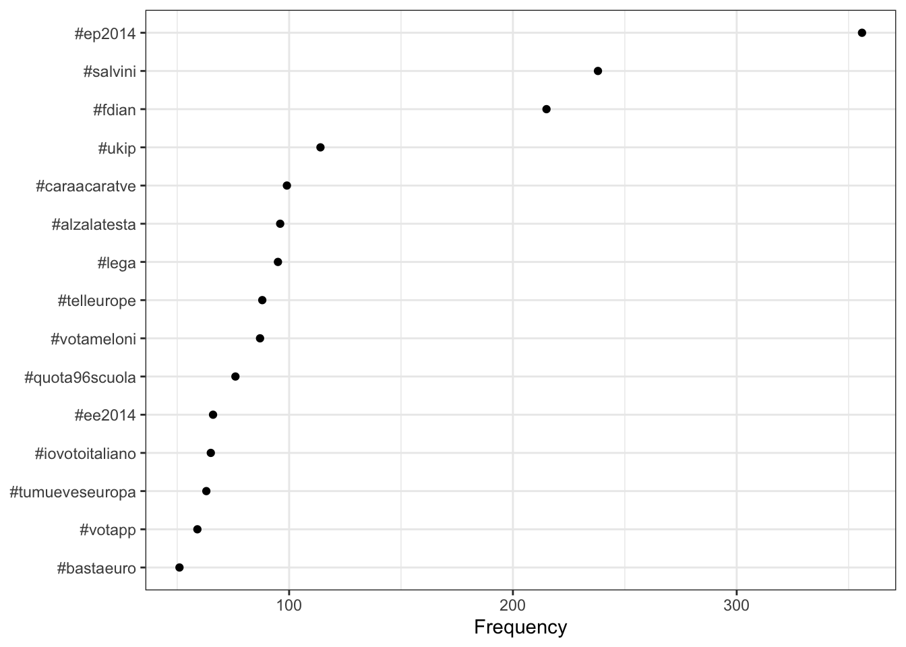
Alternatively, you can create a word cloud of the 100 most common hashtags.
set.seed(132)
textplot_wordcloud(dfmat_tweets, max_words = 100)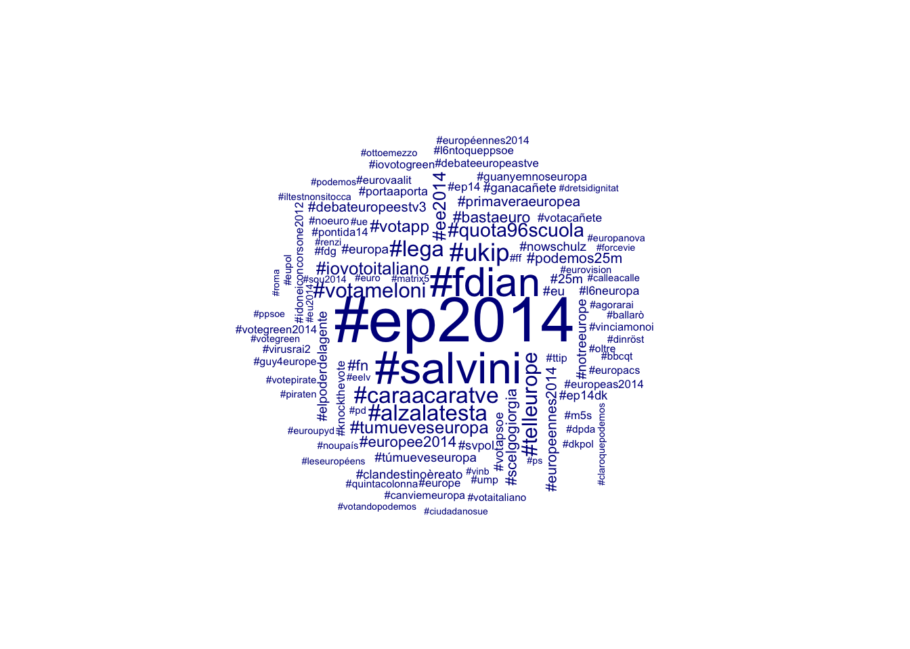
Finally, it is possible to compare different groups within one Wordcloud. We must first create a dummy variable that indicates whether a tweet was posted in English or a different language. Afterwards, we can compare the most frequent hashtags of English and non-English tweets.
# create document-level variable indicating whether tweet was in English or
# other language
corp_tweets$dummy_english <-
factor(ifelse(corp_tweets$lang == "English", "English", "Not English"))
# tokenize texts
toks_tweets <- tokens(corp_tweets)
# create a grouped dfm and compare groups
dfmat_corp_language <-
dfm(toks_tweets) |>
dfm_keep(pattern = "#*") |>
dfm_group(groups = dummy_english)
# create wordcloud
set.seed(132) # set seed for reproducibility
textplot_wordcloud(dfmat_corp_language, comparison = TRUE, max_words = 200)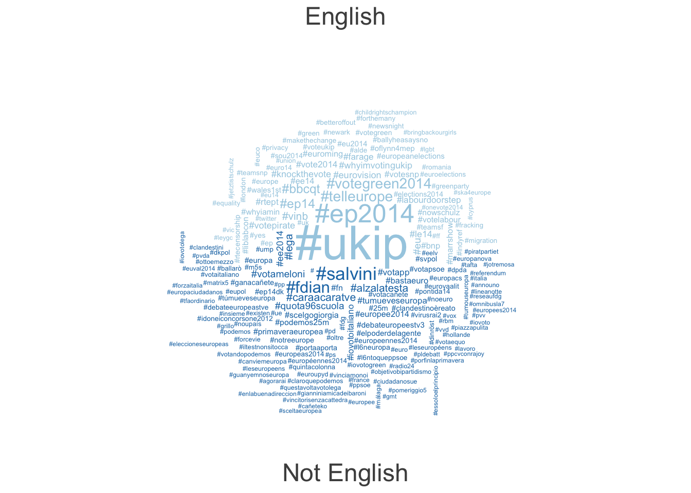
3.4.2 Lexical diversity
Lexical diversity is a measure of how varied the vocabulary in a text or speech is. It indicates the richness of language use by comparing the number of unique words (types) to the total number of words (tokens) in the text. It is useful, for instance, for analysing speakers’ or writers’ linguistic skills, or the complexity of ideas expressed in documents.
A common metric for lexical diversity is the Type-Token Ratio (TTR), calculated as: \[ TTR = \frac{N_{\text{types}}}{N_{\text{tokens}}} \]
toks_inaug <- tokens(data_corpus_inaugural)
dfmat_inaug <-
dfm(toks_inaug) |>
dfm_remove(pattern = stopwords("en")) # similar to dfm_select()
tstat_lexdiv <- textstat_lexdiv(dfmat_inaug)
tail(tstat_lexdiv, 5) document TTR
55 2005-Bush 0.6176753
56 2009-Obama 0.6828645
57 2013-Obama 0.6605238
58 2017-Trump 0.6409537
59 2021-Biden 0.5572316We can prepare a plot using ggplot() as follows:
plot_df <-
tstat_lexdiv |>
mutate(id = row_number())
ggplot(plot_df, aes(id, TTR)) +
geom_line() +
scale_x_continuous(
breaks = plot_df$id,
labels = plot_df$document,
name = NULL
) +
scale_y_continuous(labels = scales::percent) +
theme_bw() +
theme(axis.text.x = element_text(angle = 45, hjust = 1))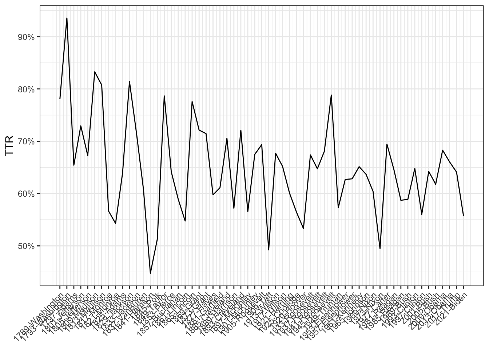
3.4.3 Document/Feature similarity
Document/feature similarity is a measure of how alike two documents or sets of features are based on their content. It quantifies the degree to which documents share similar terms, topics, or characteristics.
textstat_dist() calculates similarities of documents or features for various measures. The output is compatible with R’s dist(), so hierarchical clustering can be performed without any transformation.
toks_inaug <- tokens(data_corpus_inaugural)
dfmat_inaug <-
dfm(toks_inaug) |>
dfm_remove(pattern = stopwords("en")) # similar to dfm_select()
# Calculate document similarity
dist_mat <- textstat_dist(dfmat_inaug) # using Euclidean distance
dist_mat[1:3, 1:3]3 x 3 Matrix of class "dspMatrix"
1789-Washington 1793-Washington 1797-Adams
1789-Washington 0.00000 76.13803 141.4072
1793-Washington 76.13803 0.00000 206.6954
1797-Adams 141.40721 206.69543 0.0000To plot this using ggplot(), we rely on the ggdendro package.
clust <- hclust(as.dist(dist_mat)) # hierarchical clustering
library(ggdendro)
dendr <- dendro_data(clust)
ggdendrogram(dendr, rotate = TRUE) 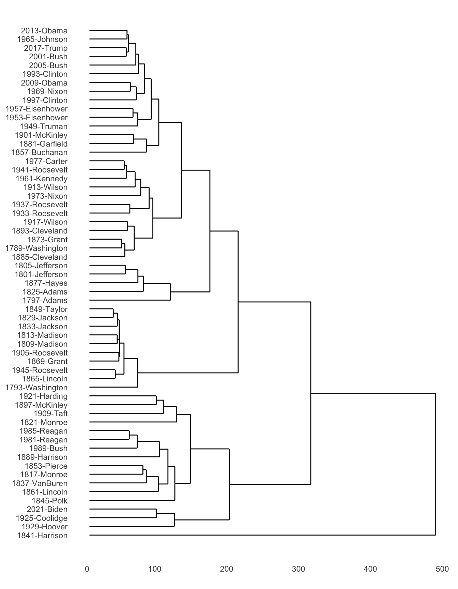
3.4.4 Feature co-occurence matrix
A feature co-occurrence matrix (FCM) is a square matrix that counts the number of times two features co-occur in the same context, such as within the same document, sentence, or window of text. This is a special object in quanteda, but behaves similarly to a DFM. As an example, consider the following:
tibble(
doc_id = 1:2,
text = c("I love Mathematics.", "Mathematics is awesome.")
) |>
corpus() |>
tokens(remove_punct = TRUE) |>
fcm(context = "document") # by defaultFeature co-occurrence matrix of: 5 by 5 features.
features
features I love Mathematics is awesome
I 0 1 1 0 0
love 0 0 1 0 0
Mathematics 0 0 0 1 1
is 0 0 0 0 1
awesome 0 0 0 0 0Let’s download the data_corpus_guardian corpus from the quanteda.corpora package.
corp_news <- quanteda.corpora::download("data_corpus_guardian")When a corpus is large, you have to select features of a DFM before constructing a FCM. In the example below, we clean up as follows:
- Remove all stopwords and punctuation characters.
- Remove certain patterns that usually describe the publication time and date of articles.
- Keep only terms that occur at least 100 times in the document-feature matrix.
toks_news <- tokens(corp_news, remove_punct = TRUE)
dfmat_news <-
dfm(toks_news) |>
dfm_remove(pattern = c(stopwords("en"), "*-time", "updated-*", "gmt", "bst", "|")) |>
dfm_trim(min_termfreq = 100)
topfeatures(dfmat_news) said people one new also us can
28413 11169 9884 8024 7901 7091 6972
government year last
6821 6570 6335 nfeat(dfmat_news)[1] 4211To construct an FCM from a DFM (or a tokens object), use fcm(). You can visualise the FCM using a textplot_network() graph as follows:
fcmat_news <- fcm(dfmat_news, context = "document")
feat <- names(topfeatures(dfmat_news, 30)) # Top 30 features
fcmat_news_select <- fcm_select(fcmat_news, pattern = feat, selection = "keep")
dim(fcmat_news_select)[1] 30 30set.seed(123)
quanteda.textplots::textplot_network(fcmat_news_select)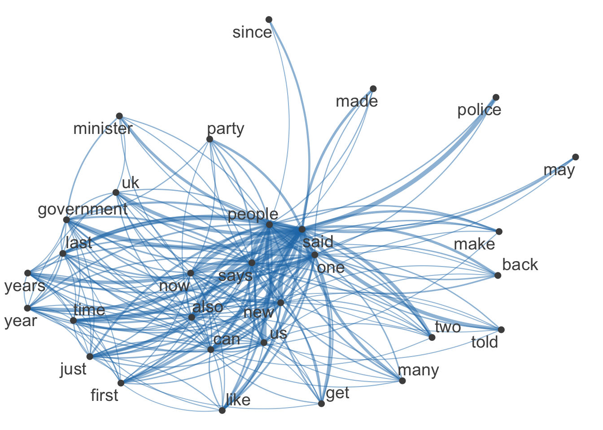
3.5 Scaling and classification
In this section we apply mainly unsupervised learning models to textual data. Scaling and classification aim to uncover hidden structures, relationships, and patterns within textual data by placing texts or words on latent scales (scaling) and grouping them into meaningful categories or themes (classification). This process transforms complex, high-dimensional text into more interpretable and actionable insights.
3.5.1 Wordfish
Wordfish is a Poisson scaling model of one-dimensional document positions (Slapin and Proksch 2008). This model is used primarily for scaling political texts to position documents (like speeches or manifestos) on a latent dimension, often reflecting ideological or policy positions. The main objective is to identify the relative positioning of texts on a scale (e.g., left-right political spectrum) based on word frequencies.
Let \(y_{ij}\) be the count of word \(j\) in document \(i\). Then assume
\[\begin{align} y_{ij} &\sim \operatorname{Poi}(\lambda_{ij}) \\ \log (\lambda_{ij}) &= \psi_j +\beta_j \theta_i \end{align}\]
In this example, we will show how to apply Wordfish to the Irish budget speeches from 2010. First, we will create a document-feature matrix. Afterwards, we will run Wordfish.
toks_irish <- tokens(data_corpus_irishbudget2010, remove_punct = TRUE)
dfmat_irish <- dfm(toks_irish)
# Run Wordfish model
tmod_wf <- textmodel_wordfish(dfmat_irish, dir = c(6, 5))
summary(tmod_wf)
Call:
textmodel_wordfish.dfm(x = dfmat_irish, dir = c(6, 5))
Estimated Document Positions:
theta se
Lenihan, Brian (FF) 1.79403 0.02007
Bruton, Richard (FG) -0.62160 0.02823
Burton, Joan (LAB) -1.13503 0.01568
Morgan, Arthur (SF) -0.07841 0.02896
Cowen, Brian (FF) 1.77846 0.02330
Kenny, Enda (FG) -0.75350 0.02635
ODonnell, Kieran (FG) -0.47615 0.04309
Gilmore, Eamon (LAB) -0.58406 0.02994
Higgins, Michael (LAB) -1.00383 0.03964
Quinn, Ruairi (LAB) -0.92648 0.04183
Gormley, John (Green) 1.18361 0.07224
Ryan, Eamon (Green) 0.14738 0.06321
Cuffe, Ciaran (Green) 0.71541 0.07291
OCaolain, Caoimhghin (SF) -0.03982 0.03878
Estimated Feature Scores:
when i presented the supplementary budget to this house
beta -0.1594 0.3177 0.3603 0.1933 1.077 0.03537 0.3077 0.2473 0.1399
psi 1.6241 2.7239 -1.7958 5.3308 -1.134 2.70993 4.5190 3.4603 1.0396
last april said we could work our way through period
beta 0.2419 -0.1565 -0.8339 0.4156 -0.6138 0.5221 0.6892 0.275 0.6115 0.4985
psi 0.9853 -0.5725 -0.4514 3.5125 1.0858 1.1151 2.5278 1.419 1.1603 -0.1779
of severe economic distress today can report that
beta 0.2777 1.229 0.4237 1.799 0.09141 0.304 0.6196 0.01506
psi 4.4656 -2.013 1.5714 -4.456 0.83875 1.564 -0.2466 3.83785
notwithstanding difficulties past
beta 1.799 1.175 0.4746
psi -4.456 -1.357 0.9321The R output shows the results of the Wordfish model applied to Irish political texts, estimating the ideological positions of various politicians. Each politician is assigned a “theta” value, representing their placement on a latent scale; positive values indicate one end of the spectrum, while negative values indicate the opposite.
For example, Brian Lenihan (FF) has a high positive theta, suggesting a strong position on one side, while Joan Burton (LAB) has a negative theta, placing her on the other side. The model also provides feature scores for words (beta values), indicating their importance in distinguishing between these positions. Words with higher absolute beta values, such as “supplementary,” are key in differentiating the ideological content of the texts, while psi values reflect word frequency variance, contributing to the model’s differentiation of document positions.
We can plot the results of a fitted scaling model using textplot_scale1d().
textplot_scale1d(tmod_wf)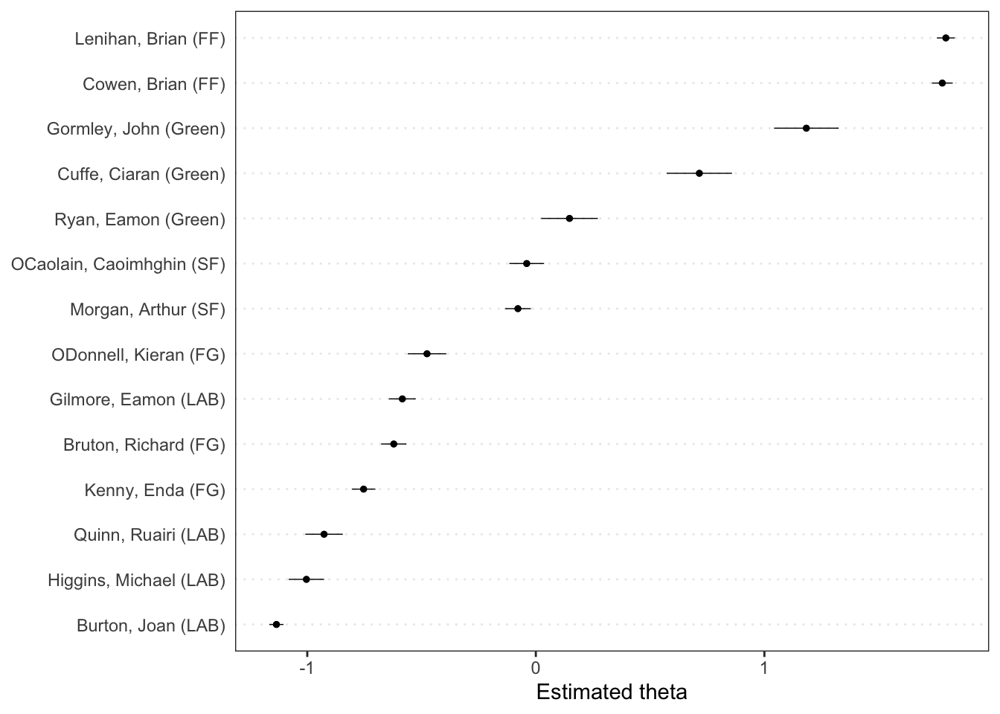
Note
The value of 0 for theta in the Wordfish model is not a true zero in an absolute sense. Instead, it serves as a relative reference point on the latent scale. In Wordfish, theta values are relative, meaning they indicate positions along a spectrum where the direction (positive or negative) is determined by the model’s scaling based on the data and specified parameters.
The function also allows you to plot scores by a grouping variable, in this case the party affiliation of the speakers.
textplot_scale1d(tmod_wf, groups = dfmat_irish$party)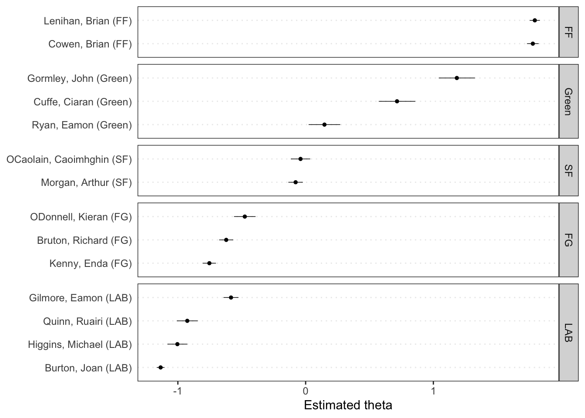
Finally, we can plot the estimated word positions and highlight certain features.
textplot_scale1d(
tmod_wf,
margin = "features",
highlighted = c("government", "global", "children",
"bank", "economy", "the", "citizenship",
"productivity", "deficit")
)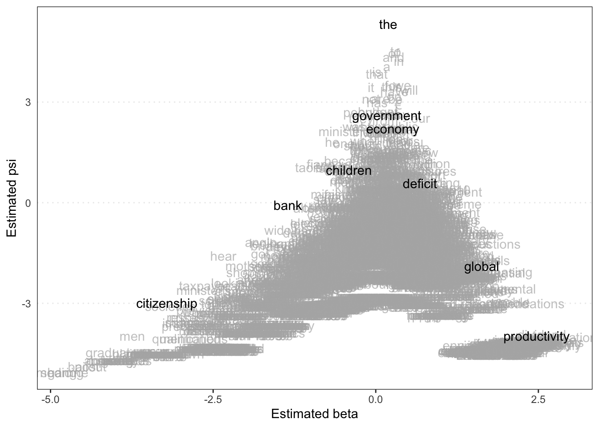
Beta (x-axis) Reflects how strongly a word is associated with the latent dimension (e.g., ideological position). Words with high absolute beta values are more influential in distinguishing between different positions; positive beta values indicate words more associated with one end of the scale, while negative values indicate the opposite.
Psi (y-axis) Represents the variance in word frequency. Higher psi values suggest that the word occurs with varying frequency across documents, while lower values indicate more consistent usage.
Therefore, words in the upper right (high beta, high psi) are influential and variably used, indicating key terms that may strongly differentiate between document positions. Words in the lower left (low beta, low psi) are less influential and consistently used, likely serving as common or neutral terms.
The plot also helps identify which words are driving the distinctions in the latent scale and how their usage varies across documents.
3.5.2 Topic models
Topic models are statistical models used to identify the underlying themes or topics within a large collection of documents. They analyze word co-occurrences across documents to group words into topics, where each topic is a distribution over words, and each document is a mixture of these topics.
A common topic model is Latent Dirichlet Allocation (LDA), which assumes that each document contains multiple topics in varying proportions. Topic models help uncover hidden semantic structures in text, making them useful for organizing, summarizing, and exploring large text datasets. In R, we use the seededlda package for LDA.
Back to the Guardian data, corp_news. We will select only news articles published in 2016 using corpus_subset() function and the year() function from the lubridate package
corp_news_2016 <- corpus_subset(corp_news, year(date) == 2016)
ndoc(corp_news_2016)[1] 1959Further, after removal of function words and punctuation in dfm(), we will only keep the top 20% of the most frequent features (min_termfreq = 0.8) that appear in less than 10% of all documents (max_docfreq = 0.1) using dfm_trim() to focus on common but distinguishing features.
# Create tokens
toks_news <-
tokens(
corp_news_2016,
remove_punct = TRUE,
remove_numbers = TRUE,
remove_symbol = TRUE
) |>
tokens_remove(
pattern = c(stopwords("en"), "*-time", "updated-*", "gmt", "bst")
)
# Create DFM
dfmat_news <-
dfm(toks_news) %>%
dfm_trim(
min_termfreq = 0.8,
termfreq_type = "quantile",
max_docfreq = 0.1,
docfreq_type = "prop"
)The LDA is fitted using the code below. Note that k = 10 specifies the number of topics to be discovered. This is an important parameter and you should try a variety of values and validate the outputs of your topic models thoroughly.
# Takes a while to fit!
tmod_lda <- seededlda::textmodel_lda(dfmat_news, k = 10)You can extract the most important terms for each topic from the model using terms(). Each column (topic1, topic2, etc.) lists words that frequently co-occur in the dataset, suggesting a common theme within each topic.
terms(tmod_lda, 10) topic1 topic2 topic3 topic4 topic5 topic6
[1,] "syria" "labor" "johnson" "funding" "son" "officers"
[2,] "refugees" "australia" "brussels" "housing" "church" "violence"
[3,] "isis" "australian" "talks" "nhs" "black" "doctors"
[4,] "military" "corbyn" "boris" "income" "love" "prison"
[5,] "syrian" "turnbull" "benefits" "education" "father" "victims"
[6,] "un" "budget" "summit" "scheme" "felt" "sexual"
[7,] "islamic" "leadership" "negotiations" "fund" "parents" "abuse"
[8,] "forces" "shadow" "ireland" "green" "story" "hospital"
[9,] "turkey" "senate" "migrants" "homes" "visit" "criminal"
[10,] "muslim" "coalition" "greece" "businesses" "read" "crime"
topic7 topic8 topic9 topic10
[1,] "oil" "clinton" "climate" "sales"
[2,] "markets" "sanders" "water" "apple"
[3,] "prices" "cruz" "energy" "customers"
[4,] "banks" "hillary" "food" "users"
[5,] "investors" "obama" "gas" "google"
[6,] "shares" "trump's" "drug" "technology"
[7,] "trading" "bernie" "drugs" "games"
[8,] "china" "ted" "environmental" "game"
[9,] "rates" "rubio" "air" "iphone"
[10,] "quarter" "senator" "emissions" "app" As an example, Topic 1 (“syria”, “refugees”, “isis”), is likely related to international conflicts, specifically around Syria and refugee crises. Topic 4 (“funding”, “housing”, “nhs”) is likely related to public services and social welfare issues, such as healthcare and housing. Each topic provides a distinct theme, derived from the words that frequently appear together in the corpus, helping to summarize and understand the main themes in the text.
You can then obtain the most likely topics using topics() and save them as a document-level variable.
# assign topic as a new document-level variable
dfmat_news$topic <- topics(tmod_lda)
# cross-table of the topic frequency
table(dfmat_news$topic)
topic1 topic2 topic3 topic4 topic5 topic6 topic7 topic8 topic9 topic10
203 222 85 211 249 236 180 186 196 184 In the seeded LDA, you can pre-define topics in LDA using a dictionary of “seeded” words. For more information, see the seededlda package documentation.
3.5.3 Latent semantic scaling
Latent Semantic Scaling (LSS) is a method used to place words or documents on a latent scale that represents an underlying dimension, such as sentiment, ideology, or any other semantic axis. The key idea is to use the co-occurrence patterns of words across documents to identify and position items along this hidden dimension.
LSS is performed using the LSX package. In this example, we will apply LSS to the corpus of Sputnik articles about Ukraine. First, we prepare the data set.
# Read the RDS file directly from the URL
corp <- readRDS(url("https://www.dropbox.com/s/abme18nlrwxgmz8/data_corpus_sputnik2022.rds?dl=1"))
toks <-
corp |>
corpus_reshape("sentences") |> # this is a must!
tokens(
remove_punct = TRUE,
remove_symbols = TRUE,
remove_numbers = TRUE,
remove_url = TRUE
)
dfmt <-
dfm(toks) |>
dfm_remove(pattern = stopwords("en"))Now to run an LSS model, run the following command:
lss <- textmodel_lss(
dfmt,
seeds = as.seedwords(data_dictionary_sentiment),
k = 300,
# cache = TRUE,
include_data = TRUE,
group_data = TRUE
)Taking the DFM and the seed words as the only inputs, textmodel_lss() computes the polarity scores of all the words in the corpus based on their semantic similarity to the seed words. You usually do not need to change the value of k (300 by default).
Let’s look at the output of the LSS model:
summary(lss)
Call:
textmodel_lss(x = dfmt, seeds = as.seedwords(data_dictionary_sentiment),
k = 300, include_data = TRUE, group_data = TRUE)
Seeds:
good nice excellent positive fortunate correct
1 1 1 1 1 1
superior bad nasty poor negative unfortunate
1 -1 -1 -1 -1 -1
wrong inferior
-1 -1
Beta:
(showing first 30 elements)
excellent positive gander good
0.2102 0.1918 0.1883 0.1829
diplomatic staffer's ex-kgb correct
0.1802 0.1773 0.1771 0.1749
mend inter-parliamntary workmanship russo-american
0.1743 0.1719 0.1715 0.1713
nicety china-u.s soufi good-neighborliness
0.1712 0.1674 0.1664 0.1644
china-canada fidgety relations downtrend
0.1616 0.1611 0.1584 0.1578
cordial canada-china superior understanding
0.1573 0.1569 0.1569 0.1561
good-neighbourly brennan's mutual reaffirmed
0.1550 0.1544 0.1538 0.1534
blida abdelkader
0.1533 0.1533
Data Dimension:
[1] 8063 59711Polarity scores in Latent Semantic Scaling (LSS) quantify how words or documents relate to a specific dimension (e.g., sentiment) based on predefined seed words. Seed words represent the extremes of this dimension (e.g., “good” vs. “bad”). LSS analyzes how other words co-occur with these seed words to assign a score.
We can visualize the polarity of words using textplot_terms(). If you pass a dictionary to be highlighted, words are plotted in different colors. data_dictionary_LSD2015 is a widely-used sentiment dictionary. If highlighted = NULL, words are selected randomly to highlight.
textplot_terms(lss, highlighted = data_dictionary_LSD2015[1:2])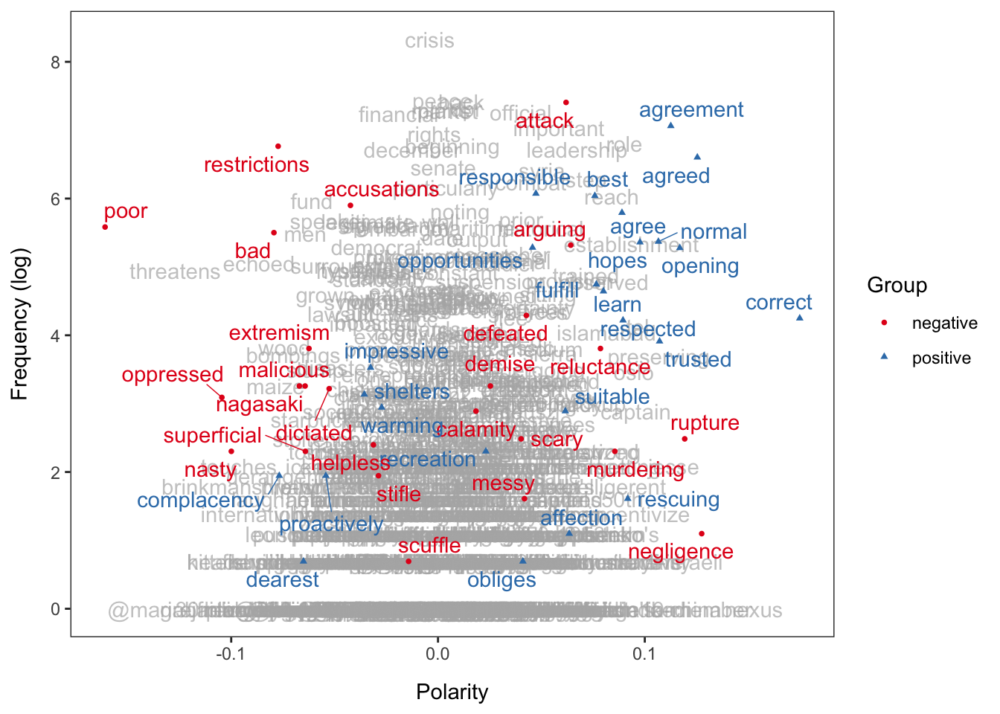
Based on the fitted model, we can now predict polarity scores of documents using predict(). It is best to work with the document-level data frame, which we will then add a new column for the predicted polarity scores.
Rows: 8,063
Columns: 5
$ head <chr> "Biden: US Desires Diplomacy But 'Ready No Matter What Happens' I…
$ url <chr> "https://sputniknews.com/20220131/biden-us-desires-diplomacy-but-…
$ time <dttm> 2022-02-01 03:25:22, 2022-02-01 01:58:19, 2022-02-01 01:47:56, 2…
$ date <date> 2022-01-31, 2022-01-31, 2022-01-31, 2022-01-31, 2022-01-31, 2022…
$ lss <dbl> 0.10093989, 0.99263241, -0.76609160, 0.15991318, 0.25420329, -1.5…Basically what we have is a data frame, where each row represents a single document (here, a news item from Sputnik with a timestamp). Each document also has a predicted polarity score based on the LSS model. We can visualise this easily using ggplot(). But first, we need to smooth the scores using smooth_lss() (otherwise it is too rough to interpret).
dat_smooth <- smooth_lss(dat, lss_var = "lss", date_var = "date")
ggplot(dat_smooth, aes(x = date, y = fit)) +
geom_line() +
geom_ribbon(
aes(ymin = fit - se.fit * 1.96,
ymax = fit + se.fit * 1.96),
alpha = 0.1
) +
geom_vline(xintercept = as.Date("2022-02-24"), linetype = "dotted") +
scale_x_date(date_breaks = "months", date_labels = "%b %Y", name = NULL) +
labs(title = "Sentiment about Ukraine", x = "Date", y = "Sentiment") +
theme_bw() +
theme(axis.text.x = element_text(angle = 45, hjust = 1))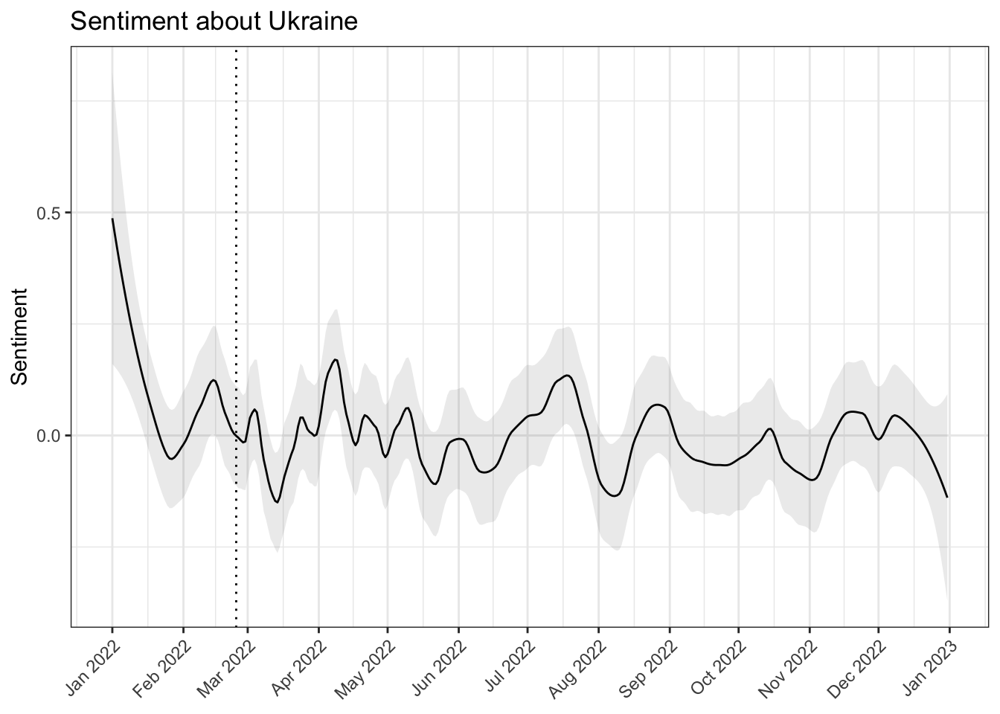
The plot shows that the sentiment of the articles about Ukraine became more negative in March but more positive in April. Zero on the Y-axis is the overall mean of the score; the dotted vertical line indicate the beginning of the war.
Slapin, Jonathan B., and Sven-Oliver Proksch. 2008. “A Scaling Model for Estimating Time-Series Party Positions from Texts.” American Journal of Political Science 52 (3): 705–22. https://doi.org/10.1111/j.1540-5907.2008.00338.x.